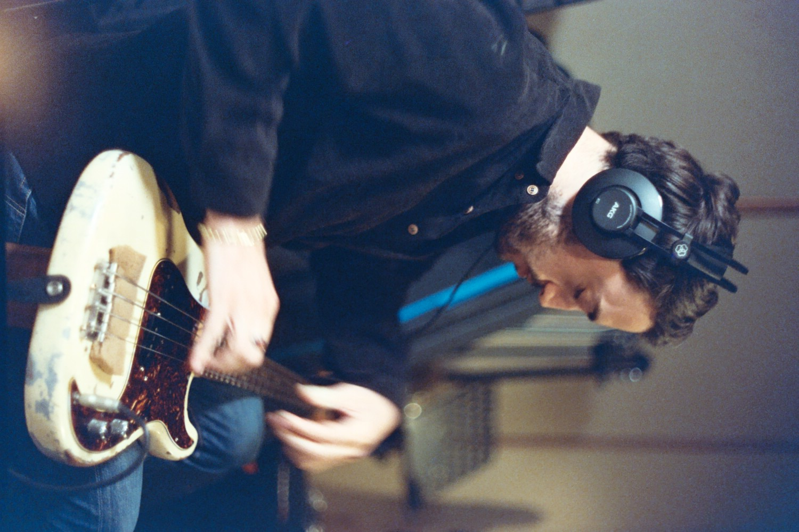

Sound Design & Original Scoring
Sound design & original compositions for picture.
Studio Bass & Session Work
Electric & upright bass. Studio and remote sessions.

About
I'm Dor, a bass player and sound designer based in Tel Aviv.
I've been working as a professional bassist for over 20 years, performing live and recording in the studio across a wide range of musical styles. Over the years, I've had the opportunity to collaborate with many different artists and musicians, exploring different musical approaches and developing my own sound.
Alongside my work as a bassist, I create sound design for visual media, focusing on unique sounds, textures, and sonic details that bring images to life and enhance the storytelling.
My background in music plays a big role in how I approach sound design. I enjoy experimenting with acoustic recordings, electronic sounds, and unconventional techniques to create something distinctive for each project. Whether it's a subtle sound effect or a complete sonic atmosphere, I believe sound is an essential part of how we experience and connect with visuals.